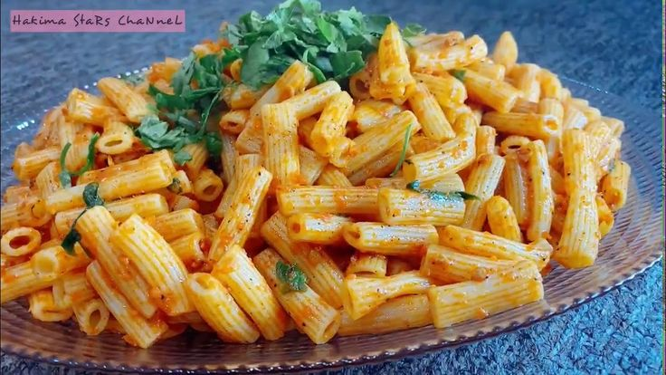
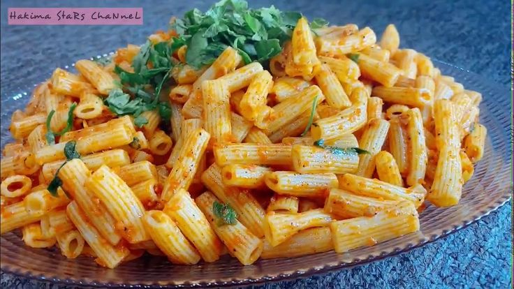

Welcome to Recipe Book!
Welcome to our collection of delicious recipes: Read reviews,
compare customer ratings, see screenshots and learn more about cookpad
Find & share recipes, Find & share recipes and enjoy
About Us
Learn more about our passion for cooking...
Contact Us
Get in touch with us for any inquiries or feedback...
 

Pasta Recipes
Here is the description and steps for making pasta...
the component:(1): 2 packets spaghtti pasta
(2): 2 clovesGarlic, minced
(3): 4 tbsptomato sauce
(4): 2 tablespoonsoil
(5): Salt to taste
(6): Spices as desired
(7): 2 litresWater, to boil the pasta
the steps:
step 1: In a pot on the stove, boil the pasta in water for 10 minutes, then drain.
step 2: Put the oil in a pot, then add the tomato sauce, chopped garlic, and leave the pot on the heat for 3 minutes.
step 3: Add the spices to the pot, stir the mixture, and leave it on the fire for a quarter of an hour.
step 4: Place the pasta in the sauce pot, stir, then leave for a while.
step 5: Remove the pot from the heat, pour the pasta with the sauce into a plate and serve hot.
Pizza Recipes
Here is the description and steps for making pizza...
pizza is one of the most delicious international foods. It is easy to prepare and prepare, and all family members will love it, especially children who love to eat pizza from time to time with the filling they prefer. Pizza is one of the famous European dishes, which is characterized by being easy and simple to prepare and does not take a lot of time or effort. We will tell you how to make quick pizza dough . It is a dough that will not take much of your time to prepare or ferment, and you will be happy with the result

Cake Recipes
Here is the description and steps for making cake...
the component :4egg
2 cupsflour
1 1/2 cupsugar
1 cupLiquid milk
3/4 cupoil
2 tablespoonsBaking powder
Grated lemon peel as desired
Vanilla as desired
the steps :
Step 1: Place the following ingredients in the blender in this order: eggs, sugar, oil and milk.
Step 2: Pour the mixture into a bowl, add the baking powder, then gradually add the flour while stirring.
Step 3: Pour the cake mixture into a greased and floured mold.
Step 4: We place the cake pan in the oven for approximately 40 minutes at medium heat, i.e. 180 degrees. Good health .
Soup Recipes
Here is the description and steps for making soup...
the component:1Medium sized potatoes, cut into cubes
1Zucchini, medium size, cut into cubes
1Carrots, cut into cubes
50 grLow-fat cheddar cheese
A little parsley
Salt and black pepper to taste
4 cupswater
the steps : k Step 1 In a pot on the fire, place the chopped potatoes, zucchini and carrots, add salt and black pepper, and add water for 20 minutes.
Step 2 Remove from heat, place in the blender and add the cheese and parsley. Beat the ingredients in the blender until combined, then return them to the pot and place on low heat for 3 minutes.
Step 3 Pour into a soup bowl and good luck.